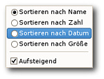
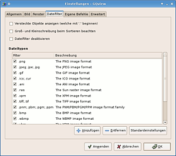

GQview
Archivierte Anleitung
Dieser Artikel wurde archiviert, da er - oder Teile daraus - nur noch unter einer älteren Ubuntu-Version nutzbar ist. Diese Anleitung wird vom Wiki-Team weder auf Richtigkeit überprüft noch anderweitig gepflegt. Zusätzlich wurde der Artikel für weitere Änderungen gesperrt.
Anmerkung: durch Geeqie ersetzt
Zum Verständnis dieses Artikels sind folgende Seiten hilfreich:
Einen Editor öffnen, optional
Rechte für Dateien und Ordner ändern, optional
 GQview
GQview  ist ein Bildbetrachter, welcher unter Xfce eingesetzt wird. Das von John Ellis entwickelte Programm nutzt das GTK+ Toolkit und gilt als sehr stabil und robust.
ist ein Bildbetrachter, welcher unter Xfce eingesetzt wird. Das von John Ellis entwickelte Programm nutzt das GTK+ Toolkit und gilt als sehr stabil und robust.
Folgende Optionen werden u.a. unterstützt:
Bildansicht,
Bildvorschau,
Diashow,
suchen ähnlicher Bilder,
Vollbildansicht und
Anzeige von Exif-Daten von Bildern.
Da das Programm seit Dezember 2006 nicht mehr weiterentwickelt wurde, wurde das Nachfolgeprojekt Geeqie gegründet.
Installation¶
Folgendes Paket muss installiert [1] werden:
gqview (universe)
jhead (universe, optional, Um Kommentare in .JPG Dateien einzufügen)
 mit apturl
mit apturl
Paketliste zum Kopieren:
sudo apt-get install gqview jhead
sudo aptitude install gqview jhead
Hinweis:
Ab Ubuntu 10.04 Lucid Lynx wird statt GQview automatisch der Nachfolger Geeqie installiert.
Das Programm ist anschließend unter "Anwendungen -> Grafik -> GQview" zu finden.
Benutzung¶
Bei Programmstart wird der Homeverzeichnis geöffnet und alle sich darin befindlichen Bilder angezeigt. Unter dem jeweiligen Bild sind Informationen zur Bildgröße, Dateigröße und Ansichtsverhältnis zu ersehen. Möchte man Exif-Informationen und versteckte Dateien angezeigt bekommen so ist dies unter den Einstellungen zu aktivieren.
Navigationsleiste¶
Die Navigation innerhalb des Programms ist intuitiv zu erfassen:
| Navigation | |
| Element | Bedeutung |
| Vorschaubilder (de)aktivieren. | |
 | Das eingestellte Hauptverzeichnis wird aufgerufen - Homeverzeichnis ist standard. |
| Ansicht aktuallisieren. | |
| Ansicht vergrößern. | |
| Ansicht verkleinern. | |
| Bild an Fenstergröße anpassen. | |
| Originalgröße. | |
| Einstellungen. | |
 | Werkzeuge schwebend. |
| Geschlossener Ordner. | |
| Ordner geöffnet. | |
| Eine Ebene höher wechseln. | |
Sammlung¶
Nachdem die Sammlung erfasst wurde, werden die Vorschaubilder in den Ordnern ~/.gqview/thumbnails und ~/.thumbnails abgelegt.
bearbeiten¶
Sofern man die Bilder in dem Ordner bearbeiten möchte, können einige Funktionen direkt aus GQview heraus vorgenommen werden. Die Drehfunktion ist leider nicht für alle Bildformate verfügbar. Man findet sie entweder im Rechtsklick-Menü oder in der Werkzeugleiste unter "Bearbeiten"-
Sehr nützlich ist die Möglichkeit, GIMP oder ein anderes Programm zur Bearbeitung starten zu können. Hier genügt es, einen Rechtsklick auf das gewünschte Bild auszuführen und dann die Option zu wählen: "Bearbeiten -> In The Gimp". Alternativ das Bild anwählen und in der Werkzeugleiste diese Schritte aufrufen. Tastenkürzel erweisen sich hier ebenfalls als nützliches Werkzeug. Auch lassen sich hier eigene Befehle festlegen und z.B. .PNG in kurzer Zeit nach .JPG konvertieren.

sortieren¶
Möchte man die Dateinamen nach einem bestimmten Kriterium sortiert haben, wählt man in der unteren Leiste den Punkt "Sortieren nach Name" an und kann nun im neuen Menü zwischen den Optionen - jeweils in auf-/absteigender Reihenfolge - wählen:
Name,
Zahl,
Datum und
Größe
Sortiermanager¶
Der Sortiermanager wird über "Ansicht -> Sortier-Manager" (de)aktiviert - alternativ per Tastenkürzel. Mit diesem Programmteil ist es möglich, Bilder schnell zu sortieren und über das eingeblendete Menü - ja nach Auswahl - in den ausgewählten Ordner zu kopieren, verschieben bzw. dort einen symbolischen Link abzulegen.
Diashow¶
Um die Diashow zu starten, unter "Ansicht -> Diashow umschalten" auswählen oder S drücken. Die Schnelligkeit des Bildwechsels richtet sich danach, was in den Einstellungen angegeben wurde.
Schlüsselworte¶
Zur Kategorisierung bzw. zur leichteren Suche kann man über "Ansicht -> Schlüsselworte" dem jeweiligen Bild eigene oder vorgegebene Schlüsselworte sowie Kommentare zuordnen. Diese werden abschließend mit gespeichert. Diese werden im Ordner ~/.gqview/metadata hinterlegt. Diese Vorgehensweise ist heute veraltet, stattdessen sollten besser Metadaten verwendet werden.
Suche¶
Um Bilder zu suchen, gibt es verschiedene Möglichkeiten die Suche einzugrenzen. Folgende Kriterien stehen dem Benutzer zur Verfügung:
Dateiname
Dateigröße
Dateidatum
Bildauflösung
Bildinhalt
Verzeichnisse können rekursiv durchsucht werden - ebenso besteht die Möglichkeit, in Kommentaren, den letzten Suchergebnissen et cetera die Daten zu durchforsten. Die Suche ist über "Datei -> Suchen" oder die Tastenkürzel zu erreichen. Unter "Datei -> Duplikate suchen" kann man nach doppelten Dateien suchen.
Dabei öffnet sich ein neues Fenster, in das man Dateien und Verzeichnisse ziehen kann, um nach doppelten Dateien zu suchen. Neben den üblichen Vergleichsmöglichkeiten wie Name, Größe und Pfad gibt es auch Prüfsumme, Bildauflösung und verschiedene Grade der Ähnlichkeit. Ähnlichkeit ist dabei besonders nützlich, um Bilder zu finden, die das gleiche Motiv haben, jedoch nicht gleich sind, weil sie durch Bildbearbeitung (z.B. Bildverbesserungen, Änderung der Auflösung, Hinzufügen von Text oder Logos usw.) verändert wurden.
Vorschaubilder + Metadaten¶
Um den Bestand von ungültigen und veralteten Einträgen zu bereinigen, neue Einträge zu erstellen bzw. diese zu löschen, wählt man unter "Bearbeiten" den Punkt "Vorschaubilder + Metadaten" aus. Im sich nun öffnenden Fenster können diese wahlweise gelöscht, bereinigt oder auch neu erzeugt werden. Dies betrifft die Daten, welche in den Ordnern ~/.gqview/thumbnails, ~/.thumbnails und ~/.gqview/metadata gespeichert wurden.
Einstellungen¶
Es können eine Vielzahl von Einstellungen im Programm vorgenommen werden. Das Einstellungsmenü ist über "Bearbeiten -> Einstellungen" zu erreichen. Hinter den jeweiligen Reitern gibt es nützliche Zusatzoptionen:
| Einstellungen | |
| Reiter | Konfigurationemöglichkeit |
| Allgemein | Startverzeichnis, Vorschaubilder und Diashoweinstellungen. |
| Bild | Zoom und sonstige Bildeinstellungen vornehmen. |
| Fenster | Status, Layout und Größe verändern. |
| Dateifilter | Dateitypen/versteckte Dateien ein-/ausblenden |
| Eigene Befehle | Befehle verknüpfen. |
| Erweitert | Vollbildmodus, Löschen, Verhalten und Steuerung verändern. |
optische Veränderung¶
Das Programm kann unter den Punkten "Ansicht" und "Einstellungen -> Bild" stark im Aussehen verändert werden. Hier sollte man selber austesten, was einem eher zusagt. Folgende Änderungen sind möglich:
Vorschaubilder
veränderter Programmaufbau
Baumansicht
Exif-Daten ein/ausblenden und vieles mehr
Eigene Befehle¶

jhead¶
Menüname:
jheadCommand Line:
jhead -ce %f
Dies dient dazu, Kommentare mittels JHead in die .JPG Dateien einzufügen. Möchte man nicht den Editor vi, sondern Mousepad nutzen, muss man die Datei /etc/environment mit einem Editor [2] bearbeiten [3] und die folgende Zeile einfügen:
EDITOR="mousepad"
Tipps¶
Damit Bilder eines bestimmten Dateityps immer mit GQview geöffnet werden, muss man in Thunar die entsprechenden Verknüpfungen setzen.
Tastenkürzel¶
| Tastenkürzel | |
| Taste(n) | Beschreibung |
| ⇧ + 0 | Ansicht vergrößern |
| - | Ansicht verkleinern |
| Z | Originalgröße |
| X | In Fenster einpassen |
| F | Vollbild |
| Strg + E | Exif-Daten ein/ausblenden |
| S | Diashow |
| T | Vorschaubilder ein/aus |
| - | Ansicht verkleinern |
| Strg + L | Listenansicht |
| Strg + I | Iconansicht |
| Strg + T | Baumansicht |
| Strg + 1 | Startet den Befehl, welcher hinterlegt wurde. Zahlen 0 - 9 möglich. |
(siehe auch GQview Keyboard Shortcuts )
- Erstellt mit Inyoka
-
 2004 – 2017 ubuntuusers.de • Einige Rechte vorbehalten
2004 – 2017 ubuntuusers.de • Einige Rechte vorbehalten
Lizenz • Kontakt • Datenschutz • Impressum • Serverstatus -
Serverhousing gespendet von